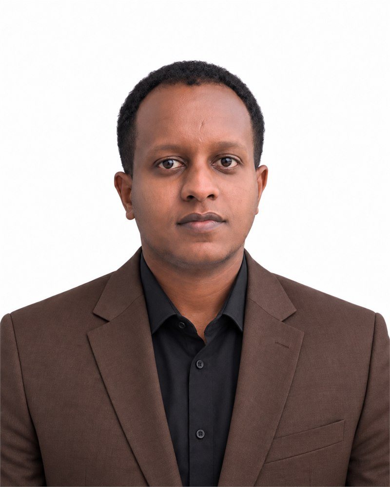
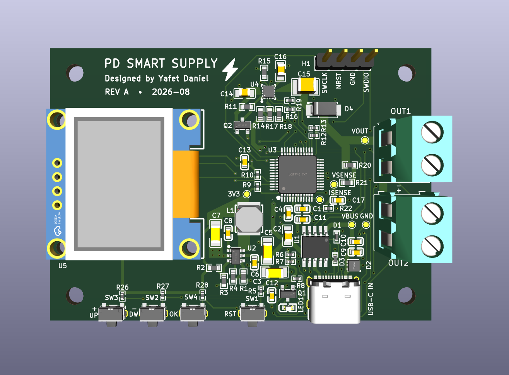
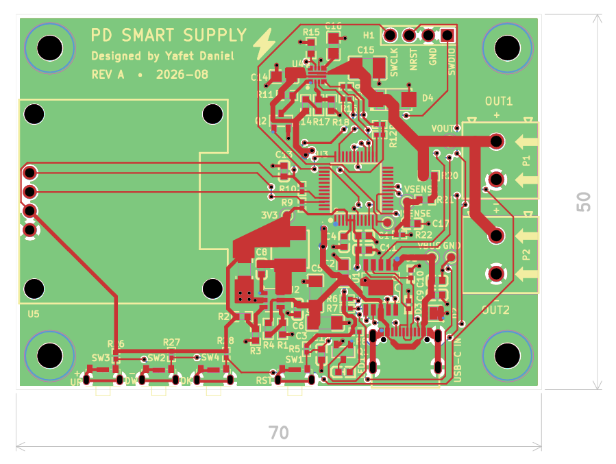

Low-power sensing
Energy-aware acquisition, signal integrity, power architecture, and long-duration operation for compact sensing platforms.
Electrical & Computer Engineering
I build sensing and embedded hardware that connects careful circuit design with reliable firmware and system-level validation.
Electrical and Computer Engineering graduate from Addis Ababa University, specialized in Microelectronics and interested in low-power sensing, bioelectronic hardware, digital systems, and hardware-software co-design.

Research direction
My interests meet where sensing hardware, resource-aware computation, and dependable embedded systems become one complete instrument.
Energy-aware acquisition, signal integrity, power architecture, and long-duration operation for compact sensing platforms.
Mixed-signal biosignal acquisition and embedded telemetry that preserve useful physiological context outside the laboratory.
Computer architecture, datapath and control design, VLSI, and efficient hardware for edge workloads.
Coordinating PCB, firmware, communication, storage, and validation decisions across the full system.
Academic evidence
2022 - 2026
BSc in Electrical and Computer Engineering - Microelectronics specialization
Computer Architecture, Digital Logic Design, Digital System Design, Microcomputers and Interfacing, VLSI Design.
Microelectronic Devices and Circuits, Integrated Circuit Technology, Principles of Electronic Design, Optoelectronics.
Signals and Systems, Digital Signal Processing, Electromagnetic Fields, EM Waves and Guide Structures.
Selected research and applied work
Three projects that best demonstrate my approach: define the system, build across layers, and validate with evidence.
Addis Ababa University - Advisor: Dr. Biniam Tadesse
A four-layer wearable platform combining an STM32L452RET6, ADS1292R analog front end, LIS3DH motion sensor, microSD logging, rechargeable USB-C power, and LTE Cat-1 telemetry.
C40-funded initiative - Addis Ababa University
Custom environmental sensing hardware supporting an urban air-quality research and policy initiative involving C40 Cities and the Addis Ababa Environmental Protection Authority.
Independent hardware project
A compact USB-C Power Delivery supply with selectable 5 V, 9 V, 12 V, and 20 V outputs, protected output up to 20 V at 3 A, STM32 control, voltage/current monitoring, and an OLED interface.


1 / 2
Technical breadth
Prototype architecture
Four-layer ESP32-S3, SEN55, and SIM7080G environmental node with Wi-Fi, cellular telemetry, USB-C power, microSD logging, and RF-aware routing.
Course project
Accumulator-based datapath integrating cascaded adders, multiplexers, shift registers, overflow detection, operation decoding, and combinational control.
Review simulation projectPCB design
Microcontroller board integrating USB-C, an LTC3405 buck converter, STM32F0, and Bosch BMI088 motion sensing over SPI.
Review hardware filesCompetition system
Interdisciplinary robot development, wiring, sensor integration, and autonomous/driver-controlled features for a championship-winning team.
Review VEX codeEmbedded simulation
Simulated quality-control system with ADC level sensing, UART/LCD feedback, PWM defect diversion, and interrupt-driven emergency halt.
Review embedded projectEngineering practice
May - Dec 2025
DAFTech Social ICT Solutions
Developed and debugged MSP430 embedded C for ultrasonic water meters, designed microcontroller-based Altium PCBs, reviewed power distribution, and applied filtering to improve measurement stability.
Nov 2024 - Nov 2025
AAU AI and Robotics Club
Contributed wiring, sensor integration, autonomous functionality, and competition strategy. The team won Tournament Champion, Robot Skills Champion, and Excellence Award at the March 2025 African Championship.
Apr - Jun 2025
Aalto University and partner institutions
Led a multinational team in a research-backed pitch on voice recognition and interpretation in banking and finance using 5G.
Credentials
Sep 2025
The Engineering Ecosystem
Apr 2026
Altium Education
2025
Aalto University
Dec 2025
Listening 9.0, Reading 9.0, Writing 7.5, Speaking 8.0
Start a conversation
I would be glad to discuss research fit, technical work, or opportunities to contribute to a laboratory.